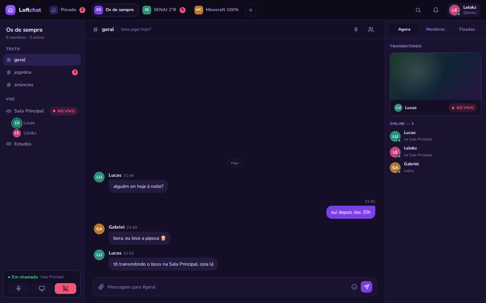
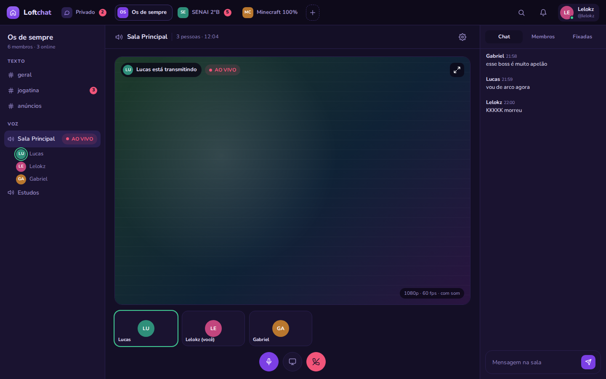

Seus amigos, sua tela.
Do seu jeito.
Chat, voz e transmissão de tela com som para você e seus amigos. Rápido, sem anúncios e personalizável de verdade.
// grátis · sem anúncios · sem assinatura · Linux, Windows e Android

Tudo que a turma precisa. Num lugar só.
Grupos com canais de texto e voz, conversas privadas e a transmissão da sua tela — feitos para jogar, estudar e ficar junto.
Transmita o PC inteiro. Com o som do jogo.
Escolha a tela ou só uma janela e mostre para a sala com o som do PC junto — menos o som do próprio Loftchat, então ninguém ouve a própria voz de volta.

Mude quase tudo. De graça.
Em outros apps, trocar até o banner do perfil é pago. No Loftchat, personalizar é o normal — e não custa nada.
Foto, banner e fundo do cartão.
Três imagens, cada uma ajustada no dedo: arraste, aproxime, pronto.
Abas do jeito que você lê.
Com nome, só ícone ou só o aberto. Apelido pessoal para cada grupo — só você vê.
Temas, fundos e sons.
Escolha a cor, ponha uma imagem no fundo do chat, troque os sons e o jeito das mensagens.
Do seu PC para a sala. Sem atraso.
A imagem e o som vão direto de um computador para o outro. O servidor no Brasil só ajuda a encontrar o caminho.
// NO SEU PC
- Você escolhe a tela ou a janela
- O som do PC vai junto
- O som do Loftchat fica de fora
// NA SALA DOS AMIGOS
- Assistem no PC ou no celular
- Conversam no chat da sala
- Tela cheia num toque
Chame a turma pro Loftchat.
Instale, crie sua conta com nome de usuário e mande seu @ para os amigos.